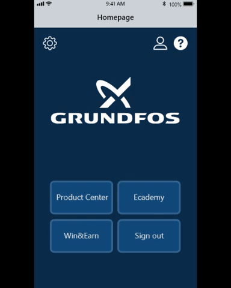
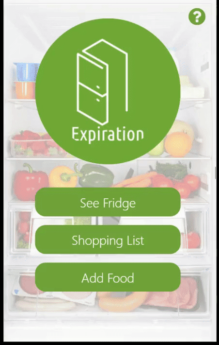
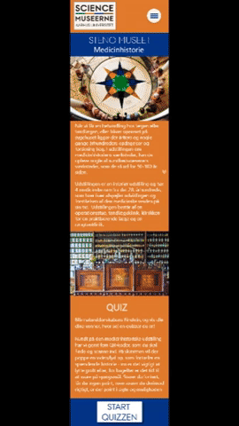

Some of my finished projects
Grundfos prototype application - B2B project
In this project we were assigned to make a prototype of an improved version of Grundfos' already existing application. We were to merge Ecademy (a learning platform) and Win&Earn (a way of earning prizes for digital points). This is the prototype my group came up with.
Expiration - Webapp project
For this project we had to make a webapp. We made the app Expiration, which works as an inventory of the users fridge, as a shopping list and as a way for the user to keep track of the expiration dates of their food.
Edutainment application - Steno museum project
We collaborated with the Steno museum, as they needed a digital solution for a way to engage the younger visitors towards the exhibitions. We wanted to make a quiz that was fun, but also made you learn something, hence the term edutainment.
Lord of the Rings - Mapbox project
This was a small assignment where we had to use the web tool Mapbox and make a map over a the locations of a movie we liked - I choose the Lord of The Rings movies